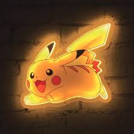

Pikachu est un petit Pokémon joufflu qui ressemble à un rongeur, au corps recouvert d'un pelage
jaune avec
deux bandes horizontales brunes dans le dos
Bulbizarre est un petit quadrupède vert avec une tête large. Il porte un bulbe sur son dos. Ce
dernier lui
sert
également il peut survivre plusieurs jours sans manger.
Carapuce est une petite tortue
bipède de couleur bleue. Il possède une carapace brune au
pourtour blanc, beige au niveau du ventre Ses yeux sont grands et violacés.
OOnix est un Pokémon semblable à
un serpent dont le corps est composé d'une quinzaine de gros rochers gris alignés les uns derrière les
autres.
Psykokwak a l'allure générale
d'un canard jaune. Il a un bec jaune pâle un peu aplati, les
pattes de la même couleur que son bec. Il est souvent pris de migraines.
Salamèche
bipède
et reptilien avec un corps principalement orange, à l'exception
de son ventre et de ses plantes de pieds qui sont beiges. Ses bras et ses jambes sont courts.
Togepy est un Bébé Pokémon
de type Fée de la deuxième génération. Avant la sixième
génération.
STAROSS nage en faisant tournoyer son corps en forme d'étoile, un peu à la manière d'une hélice de
bateau. Le cœur au centre du corps de ce POKéMON brille de sept couleurs.
Miaouss ressemble à un chat, à la différence qu'il n'a pas de museau visible et qu'il se tient la
plupart du temps sur ses deux pattes arrières où il prend une posture plantigrade.